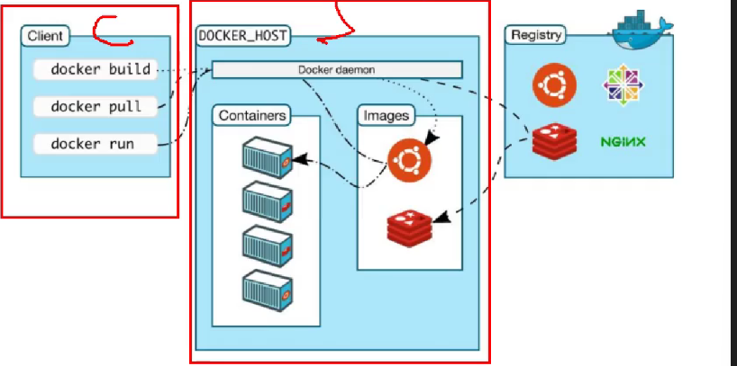
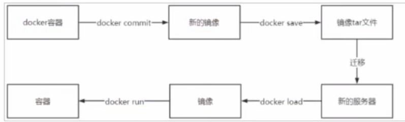

docker
什么是docker
Docker 是一个开源的容器化平台，用于将应用及其依赖打包到轻量、可移植的容器中。
docker 架构

- 镜像（Image）：只读模板，用于创建容器。
- 容器（Container）：镜像的运行实例。
- Docker Hub：官方镜像仓库，可拉取/推送镜像。
安装docker
先去安装c,c++环境
yum install gcc
yum install gcc-c++
再去安装一些docker的依赖
yum install -y yum-utils \
device-mapper-persistent-data \
lvm2
添加镜像源
# 12月1日，发现这个源有问题
sudo yum-config-manager \
--add-repo \
https://download.docker.com/linux/centos/docker-ce.repo
# 清华源
sed -i 's+https://download.docker.com+https://mirrors.tuna.tsinghua.edu.cn/docker-ce+' /etc/yum.repos.d/docker-ce.repo
安装docker
# 一个一个安装，不然有问题
yum install -y docker-ce docker-ce-cli containerd.io docker-buildx-plugin docker-compose-plugin
# 一键安装
curl -fsSL https://github.com/tech-shrimp/docker_installer/releases/download/latest/linux.sh| bash -s docker --mirror Aliyun
删除 docker
yum remove docker \
docker-client \
docker-client-latest \
docker-common \
docker-latest \
docker-latest-logrotate \
docker-logrotate \
docker-engine
docker的配置
配置仓库
sudo mkdir -p /etc/docker
sudo tee /etc/docker/daemon.json <<-'EOF' { "registry-mirrors": ["https://kf7vf3vo.mirror.aliyuncs.com"] } EOF
sudo systemctl daemon-reload
sudo systemctl restart docker
完整配置如下（现在阿里的仓库不对外开放了，只能阿里云的云服务器才能用）ps: 实在没源用我意思挂着梯子下到本地, 然后从本机传到 docker
坑：最后不要有逗号！！
{
"registry-mirrors": [
"https://docker.m.daocloud.io",
"https://docker.1panel.live",
"https://docker.xuanyuan.me",
"https://docker.mirrors.ustc.edu.cn",
"https://registry.dockermirror.com",
"https://hub-mirror.c.163.com"
]
}
// 腾讯云服务器的配置
{
"registry-mirrors": [
"https://docker.m.daocloud.io",
"https://docker.1panel.live",
"https://docker.xuanyuan.me",
"https://docker.mirrors.ustc.edu.cn",
"https://registry.dockermirror.com",
"https://hub-mirror.c.163.com",
"https://mirror.ccs.tencentyun.com"
]
}
配置允许远程连接（为了后续把springboot项目打包成镜像，上传到docker）
-H tcp://0.0.0.0:2375：开启 TCP 端口监听，允许所有 IP 访问（生产环境建议限制 IP）。-H fd://：保留默认 Unix socket 方式（本地通信仍可用）。2375是 Docker 默认的远程 API 端口。// 1. 编辑配置文件 vim /lib/systemd/system/docker.service // 2. 修改配置 ExecStart=/usr/bin/dockerd -H fd:// --containerd=/run/containerd/containerd.sock ExecStart=/usr/bin/dockerd -H tcp://0.0.0.0:2375 -H fd:// --containerd=/run/containerd/containerd.sock // 3. 重启服务 systemctl daemon-reload # 重载 systemd 配置 systemctl restart docker # 重启 Docker 服务
docker常用命令
镜像是由很多层组成的，这样的好处是层是公用的，这样下载其他镜像时可以复用之前下载过的层。
1. 镜像相关
// 查看中央仓库
docker search 镜像关键字:版本
// 查看本地镜像
docker images -a
// 拉取镜像
docker pull 镜像名称:版本号
//删除镜像
docker rmi --force | -f id/镜像名称:版本号
// 删除所有
ddocker rmi -f $(docker images -aq)
// 从本地加载镜像（也就是把tar --> 镜像）
docker load -i xxx.tar
2. 容器相关
// 查看容器
docker ps -aq
-a : 所有 不加-a就是只看正在运行时的
-q : 查id
// 创建容器
-i：表示运行容器
-t：表示容器启动后会进入其命令行。加入这两个参数后，容器创建就能登录进去。即分配一个伪终端。
--name :为创建的容器命名。
-v：表示目录映射关系（前者是宿主机目录，后者是映射到宿主机上的目录），可以使用多个－v做多个目录或文件映射。注意：最好做目录映射，在宿主机上做修改，然后共享到容器上。
-d：在run后面加上-d参数,则会创建一个守护式容器在后台运行（这样创建容器后不会自动登录容器，如果只加-i -t两个参数，创建后就会自动进去容器）。
-p：表示端口映射，前者是宿主机端口，后者是容器内的映射端口。可以使用多个-p做多个端口映射
交互型容器：具有和用户交互的输入和输出终端，容器创建后自动进入容器，首次退出exit容器后，容器自动关闭。
容器启动了，但容器里面的程序没自己启动
// 创建容器并进入它、同时用终端于它交互
docker run --name 容器名 镜像名:版本号
eg: docker run -it -p 8888:8080 --name tomcat tomcat /bin/bash
// 进入交互式容器
docker exec -it 容器名 /bin/bash
// 创建守护型容器
守护型容器：没有和用户交互终端，需要使用docker exec进入容器，退出后，容器不会关闭。
docker run -id --name -p xxxx:xxxx 镜像名：版本号
// 运行容器
docker start xxx
// 停止容器
docker stop xxx
// 重启容器
docker restart xxx
// 删除容器
docker rm xxx
// 删除所有容器
docker rm $(docker ps -aq)
// 进入容器
docker exec -it xxx /bin/bash
// 修改容器的一些属性
docker update 容器名 参数 参数值
eg: docker update xxx --restart alaways
// 退出容器
exit
3. 其他命令
日志相关
// 查看容器内进程的日志
docker logs -f 容器名 / id
// 查看容器详情信息
docker inspect 容器名 / id
宿主机与docker容器的文件传递
// 宿主机的文件与容器进行交互
docker cp 宿主机的文件路径 容器名:要拷贝到该容器的路径
docker 容器名:要拷贝到该容器的路径 cp 宿主机的文件路径
备份与迁移

// 1. 先通过容器去创建一个镜像
docker commit 容器名/id 镜像名
eg:docker commit redis01 myredis_image
// 2. 把镜像归纳成tar包
docker save -o tar包的文件名 镜像名称/id
eg:docker save -o ./images/redis_image.tar myredis_image
// 3. 把tar包重写加载为镜像
docker load -i 镜像tar文件名称
eg: docker load -i /opt/images/
docker 数据卷
1. 概念
Docker 数据卷（Volumes） 是宿主机（Host）与容器（Container）之间进行数据共享和持久化的特殊目录。
2. 数据卷相关命令
查看数据卷
docker volume ls
docker volume inspect 数据卷名称
创建数据卷
docker volume create 数据卷名称
删除数据卷
docker volume rm 数据卷名称
数据卷的挂载（也就是和哪个容器绑定）
docker run -id -p xxx: xxx --name xxx -v 数据卷名字:/data redis:7.0.15
解释：数据卷名字:/data
/data 是容器内部的数据
注：卷名前面不能有 / ，如果有/，就是目录挂载，这样的挂载方式都不需要创建卷了
Docker挂载主机目录Docker访问出现cannot open directory .: Permission denied
解决办法：在挂载目录后多加一个--privileged=true参数即可
注意事项：
1、如果数据卷没有提前创建好，那么在创建容器的时候会自动创建对应的数据卷 2、数据卷挂载的时候数据卷名称前面没有/* 3、容器目录不存在会自动创建 4、数据卷目录如果不为空，此时会使用数据卷目录内容覆盖容器目录内容 5、数据卷目录如果为空，容器目录不为空，此时就会使用容器目录内容覆盖数据卷目录
目录挂载
docker run -d --name=redis02 -p 6380:6379 -v /redis-data:/data redis:7.0.10
注意事项：
1、如果宿主机目录没有提前创建好，那么在创建容器的时候会自动创建对应的宿主机目录 2、宿主机目录挂载的时候宿主机目录名称前面有/ 3、容器目录不存在会自动创建 4、宿主机目录如果不为空，此时会使用宿主机目录内容覆盖容器目录内容 5、宿主机目录如果为空，容器目录不为空，此时就会将容器目录内容清空掉 注意!!!!!
项目部署
1. dockerfile
Dockerfile 是一个文本文件，包含一系列指令（instructions），用于自动构建 Docker 镜像。Docker 引擎会按顺序执行这些指令，最终生成一个可运行的镜像。
（1）FROM —— 指定基础镜像
- 作用：定义构建新镜像所基于的父镜像（基础镜像）。
- 所有 Dockerfile 必须以 FROM 开头（注释和空行除外）。
- centos:7 表示使用官方仓库中的 CentOS 7 镜像作为起点。
- 如果你不需要操作系统层，也可以用 scratch`（空镜像），但一般用于极简场景。
FROM centos:7
（2）MAINTAINER（已弃用，建议用 LABEL）
LABEL maintainer="atguigu@example.com"
（3）RUN —— 在镜像中执行命令
- 作用：在构建过程中创建新的镜像层，并执行 shell 命令。
- 每个
RUN会生成一层（layer），建议合并多个命令以减少层数（用&&连接）：RUN mkdir -p /usr/local/java && yum update -y
（4）ADD —— 复制文件/解压/下载
- 将本地文件（如
.tar.gz）复制到镜像中。 - 自动解压
.tar,.tar.gz,.zip等压缩包（仅限本地路径）。 - 也支持从 URL 下载文件（但不推荐，建议用
curl+RUN更可控）。
ADD jdk-17_linux-x64_bin.tar.gz /usr/local/java/
（5） ENV —— 设置环境变量
设置环境变量，后续的 RUN、容器启动时都可用。
ENV JAVA_HOME=/usr/local/java/jdk-17.0.7
ENV PATH=$PATH:$JAVA_HOME/bin
// 可以写成一行
ENV JAVA_HOME=/usr/local/java/jdk-17.0.7 \
PATH=$PATH:$JAVA_HOME/bin
（6） 其他指令：
| 指令 | 说明 |
|---|---|
WORKDIR |
设置工作目录（类似 cd），后续 RUN/CMD 在此目录执行 |
COPY |
仅复制文件（不解压），比 ADD 更明确 |
EXPOSE |
声明容器运行时监听的端口（如 8080），仅为文档用途，需配合 -p 映射 |
CMD |
容器启动时默认执行的命令（可被 docker run 后参数覆盖） |
ENTRYPOINT |
容器主命令，与 CMD 配合使用，不易被覆盖 |
2. 构建过程
编写dockerfile
# 使用 CentOS 7 作为基础镜像
FROM centos:7
# 标注维护者（推荐用 LABEL）
LABEL maintainer="atguigu"
# 创建 Java 安装目录
RUN mkdir -p /usr/local/java
# 将本地 JDK 压缩包添加并自动解压到指定目录 ADD jdk-17_linux-x64_bin.tar.gz /usr/local/java/
# 设置环境变量
ENV JAVA_HOME=/usr/local/java/jdk-17.0.7
ENV PATH=$PATH:$JAVA_HOME/bin #
（可选）验证 Java 安装
RUN java -version
构建镜像
docker build -t centos7-jdk17 .
-t：指定镜像名称和标签.：表示当前目录为构建上下文（Dockerfile 和 JDK 包必须在此）
一些常用容器的下载与启动
mysql
// 创建一个容器
docker run -di --name=mysql -p 3306:3306 -v mysql_data:/var/lib/mysql -v mysql_conf:/etc/mysql -e MYSQL_ROOT_PASSWORD=liuqiang mysql:8.0.30
// 之后，进入该容器，记得设置编码格式，否则中文可能乱码
docker exec -it -e LANG=C.UTF-8 mysql bash
rabbitmq
# -d 参数：后台运行 Docker 容器
# --name 参数：设置容器名称
# -p 参数：映射端口号，格式是“宿主机端口号:容器内端口号”。5672供客户端程序访问，15672供后台管理界面访问
# -v 参数：卷映射目录
# -e 参数：设置容器内的环境变量，这里我们设置了登录RabbitMQ管理后台的默认用户和密码
docker run -d \
--name rabbitmq \
-p 5672:5672 \
-p 15672:15672 \
-v rabbitmq-plugin:/plugins \
-e RABBITMQ_DEFAULT_USER=root \
-e RABBITMQ_DEFAULT_PASS=liuqiang \
rabbitmq:3.12.0-management
// 然后，把插件上传到数据卷后，启动插件即可
rabbitmq-plugins enable rabbitmq_delayed_message_exchange
nacos
# 拉取镜像
docker pull nacos/nacos-server:v2.1.1
# 创建容器
docker run --name nacos -e MODE=standalone -p 8848:8848 -p 9848:9848 -d nacos/nacos-server:v2.1.1
# nacos2.x的版本新增了一个客户端与服务端的gRpc的通讯端口号9848
redis
1. 创建redis数据存放以及配置文件
mkdir -p /mydata/redis/conf /mydata/redis/data
touch /mydata/redis/conf/redis.conf
2. 运行redis
docker run -d \
--name redis \
-p 6379:6379 \
-v /root/mydata/redis/data:/data \
-v /root/mydata/redis/conf/redis.conf:/etc/redis/redis.conf \
redis:7.0.15 redis-server /etc/redis/redis.conf
3. 进入redis-cli测试
docker exec -it redis redis-cli
minio
docker pull minio/minio
docker run \
-p 9000:9000 \
-p 9001:9001 \
--name=spzx_minio \
-d --restart=always \
-e "MINIO_ROOT_USER=minioadmin" \
-e "MINIO_ROOT_PASSWORD=minioadmin" \
-v spzx_minio-data:/data \
-v spzx_minio-config:/root/.minio \
minio/minio server /data --console-address ":9001"
nginx
docker pull nginx
docker run -d --name=spzx_nginx -p 80:80 -v nginx_conf:/etc/nginx -v nginx_html:/usr/share/nginx/html -v nginx_logs:/var/log/nginx nginx
sentinel 默认8080
docker pull bladex/sentinel-dashboard:latest
docker run --name=sentinel-dashboard --restart=always -p 8858:8858 -d bladex/sentinel-dashboard:latest
elasticsearch
拉取镜像
docker pull elasticsearch:8.5.0
在宿主机建立要被挂载的目录
rm -rf /opt/elasticsearch
mkdir -p /opt/elasticsearch/{config,plugins,data}
去 github 下载中文分词器，然后拷贝到plugins目录重启 es
1. 下载elasticsearch-analysis-ik-8.5.0.zip
2. 上传到/mydata/elasticsearch/plugins 目录后，解压：unzip elasticsearch-analysis-ik-8.5.0.zip -d ik-analyzer 必须删除原来的压缩包elasticsearch-analysis-ik-8.5.0.zip**
3. 重启es：docker restart a24eb9941759
yum install -y unzip
unzip elasticsearch-analysis-ik-8.5.0.zip -d ik-analyzer
rm -rf elasticsearch-analysis-ik-8.5.0.zip
制作配置文件
cat <<EOF> /opt/elasticsearch/config/elasticsearch.yml
xpack.security.enabled: true # true为开始密码验证
xpack.license.self_generated.type: basic
xpack.security.transport.ssl.enabled: false # 不配报错
xpack.security.enrollment.enabled: true
http.host: 0.0.0.0
EOF
给当前el目录设置权限
chmod -R 777 /opt/elasticsearch
启动 el
docker run --name elasticsearch -p 9200:9200 -p 9300:9300 \
--net elastic \
--restart=always \
-e "discovery.type=single-node" \
-e ES_JAVA_OPTS="-Xms512m -Xmx512m" \
-v /opt/elasticsearch/config/elasticsearch.yml:/usr/share/elasticsearch/config/elasticsearch.yml \
-v /opt/elasticsearch/data:/usr/share/elasticsearch/data \
-v /opt/elasticsearch/plugins:/usr/share/elasticsearch/plugins \
-d elasticsearch:8.5.0
如果运行时提示elastic 未找到 执行这个命令 ： docker network create elastic
# 重置下面两个密码，注意：需等待es启动
docker exec -it elasticsearch bin/elasticsearch-reset-password -u elastic -i # -i 表示自定义密码 给java客户端用的
docker exec -it elasticsearch bin/elasticsearch-reset-password -u kibana_system -i # 给 kibana 用的
用户名: elastic 密码可以使用: liuqiang
portainer
步骤 1：拉取 Portainer 英文版
docker pull portainer/portainer-ce:latest
步骤 2：启动 Portainer
docker run -d --name portainer -p 19000:9000 -v /var/run/docker.sock:/var/run/docker.sock -v /app/portainer_data:/data --restart always --privileged=true portainer/portainer-ce:latest
步骤 3：访问 Portainer Web 界面
http://115.190.231.171:19000/
zipkin
docker pull openzipkin/zipkin
docker run --name zipkin --restart=always -d -p 9411:9411 openzipkin/zipkin
canal
mondb
直接拉取镜像
docker pull mongo:7.0.0
创建宿主机上的挂载目录
rm -rf /opt/mongo
mkdir -p /opt/mongo/data/db
创建并启动容器
docker run -d --restart=always -p 27017:27017 --name mongo -v /opt/mongo/data/db:/data/db mongo:7.0.0
连接mongosh
docker exec -it mongo mongosh
断开连接（在linux中）
exit
docker compose
批量管理容器, 是docker内置的插件
# 启动容器(如果不存在容器就创建、存在则修改)
docker compose -f docker-compose.yml up -d
# 删除所有容器
docker compose -f docker-compose.yml down
# 停止所有容器
docker compose -f docker-compose.yml stop
# 启动所有容器
docker compose -f docker-compose.yml start
# 重启所有容器
docker compose -f docker-compose.yml restart
compose 管理多个容器的 yml 配置
容器编排：docker-compose.yml
---------------------------------------------
services:
redis:
image: redis:7.0.10
container_name: redis001
ports:
- "6399:6379"
volumes:
- redis-data:/data
mysql:
container_name: mysql001
image: mysql:8.0.30
ports:
- "3399:3306"
volumes:
- mysql_data:/var/lib/mysql
- mysql_conf:/etc/mysql
privileged: true
environment:
- "MYSQL_ROOT_PASSWORD=1234"
ebuy:
container_name: ebuy001
image: ebuy-docker:v2.0
ports:
- "8099:8081"
volumes:
redis-data: {}
mysql_data: {}
mysql_conf: {}
---------------------------------------------